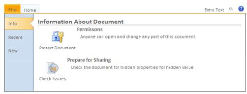

The backstage page has a feature to add UserControls as submenu items. The left side of the page contains menu items and the right side contains UserControl items.
To render the ribbon with the backstage page, set the ApplicationMenuType property to BackStagePage as shown in the following code snippet.
Using Builder
The following steps explain how to use the BackStagePage menu type.
1. In the view, invoke the Ribbon helper with the control ID as the first argument and set the ApplicationMenuType as BackStagePage.
|
[ASPX]
<% Html.Syncfusion().Ribbon("ribbon").Title("Core Features").Height(Unit.Pixel(160)).Width(Unit.Pixel(600)).ApplicationMenuType(AppMenuType.ApplicationMenu).ApplicationMenuText("File").ApplicationMenu(applicationMenu => { applicationMenu.Add().Text("Save").ImageUrl(Url.Content("../Images/Ribbon/Save16.png")).SpriteCSS("text").Children(item => { item.Add().Text("Clipboard").ImageUrl(Url.Content("../Images/Ribbon/Clipboard.png")); item.Add().Text("ChooseForms").ImageUrl(Url.Content("../Images/Ribbon/chooseforms.png")); item.Add().Text("Undo").ImageUrl(Url.Content("../Images/Ribbon/Undo16.png")); }); applicationMenu.Add().Text("SaveAs").ImageUrl(Url.Content("../Images/Ribbon/saveas16.gif")); applicationMenu.Add().Text("Open").ImageUrl(Url.Content("../Images/Ribbon/folder.png")); applicationMenu.Add().Text("Close").ImageUrl(Url.Content("../Images/Ribbon/folderclosed.png")); }).BackStagePage(page => { page.Add().Text("Page1").PartialView("ViewUserControl1"); page.Add().Text("Page2").PartialView("ViewUserControl2"); }) .Render();%>
[Razor]
@{Html.Syncfusion().Ribbon("ribbon").Title("Core Features").Height(System.Web.UI.WebControls.Unit.Pixel(160)).Width(System.Web.UI.WebControls.Unit.Pixel(600)).ApplicationMenuType(AppMenuType.ApplicationMenu).ApplicationMenuText("File").ApplicationMenu(applicationMenu => { applicationMenu.Add().Text("Save").ImageUrl(Url.Content("../Images/Ribbon/Save16.png")).SpriteCSS("text").Children(item => { item.Add().Text("Clipboard").ImageUrl(Url.Content("../Images/Ribbon/Clipboard.png")); item.Add().Text("ChooseForms").ImageUrl(Url.Content("../Images/Ribbon/chooseforms.png")); item.Add().Text("Undo").ImageUrl(Url.Content("../Images/Ribbon/Undo16.png")); }); applicationMenu.Add().Text("SaveAs").ImageUrl(Url.Content("../Images/Ribbon/saveas16.gif")); applicationMenu.Add().Text("Open").ImageUrl(Url.Content("../Images/Ribbon/folder.png")); applicationMenu.Add().Text("Close").ImageUrl(Url.Content("../Images/Ribbon/folderclosed.png")); }).BackStagePage(page => { page.Add().Text("Page1").PartialView("ViewUserControl1"); page.Add().Text("Page2").PartialView("ViewUserControl2"); }) .Render();}
|
2. Build and run the application.

Figure 195: BackStagePage